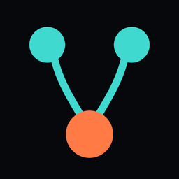
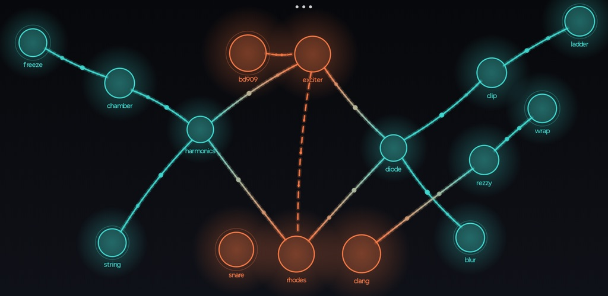

Vascular — Tactile Synth
iPhone · iPad · Android phones and tablets
A canvas-based electroacoustic instrument. Touch the canvas to create sound generators and processors, and connect them with your fingers: the network is the signal path, the picture of the instrument and the surface it is played on. A node's position on the canvas is its place in the stereo field. Every change is heard at once.


Main features
- 55 synthesis families: subtractive, FM, additive, granular, spectral, physical modelling, wavetable, wave terrain, pulsar and stochastic. Also a DX7, three macrosynths, drum synthesis, a 303 and a supersaw.
- 71 processors: filters, distortion, delays, combs, diffusion, reverb, spectral freezing, convolution, vocoding, tape loops and others.
- A sample player for your own loops, sampled acoustic instruments that play in the session's key, and microphone input.
- 7 controllers that play or move other nodes: a melodic sequencer, an arpeggiator, a drum machine, a shift register, colliding cars, a Game of Life and an LFO controller.
- A randomizer for whole patches or parts of them, with a padlock on every parameter; Angiogenesis, which changes the network on its own.
- 27 scales and Scala tunings, a shared clock with tap tempo, and per-source clock divisions.
- 32 pattern slots with morphing, a four-lane effects sequencer, a gesture looper, 48 levels of undo, and recording of takes.
- Runs as an AUv3 instrument in AUM, Loopy Pro, Logic and other hosts, and hosts AUv3 plugins as nodes (iOS, in-app purchase).